Level 5 exemplar (1) — Paper ONE · Question 1 · Part A
Transcribed from handwritten HKEAA sample (2025). Spelling and wording kept as written.
2025 exam plates
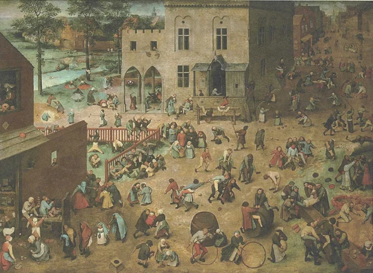
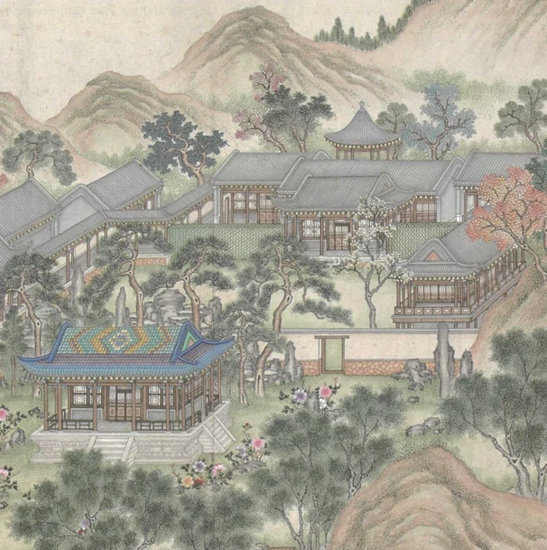
Describe
Plate 1a is titled Children's games by Pieter Bruegel the Elder. The large-scale painting uses oil paints to depict a medieval scene in a city. The rough texture of the painting brings a dirty, patchy appearance to the art. Throughout the painting, many different people, young and old, male and female, are fighting, playing games or fooling around, bringing the illusion of a festival. The buildings are geometrical; the painting is heavy in little details like fallen hats, multicoloured clothes, etc. The painting itself is mainly brownish, giving it a rustic feeling. It is a landscape of an old village, crowded and lived in.
Plate 1b is titled Engraved Moon and Unfolding Clouds & Everlasting on the Abode of the immortals, made in the Qing dynasty. This Chinese-style painting shows a Chinese palace in the middle of low hills and blossoming trees. Both the rocks and hills and trees have a very organic look. There is no human in sight, but it focuses on a colourful lived house in the foreground. Unlike 1(a), 1(b) has no humans; instead an empty courtyard and grassland by nature, vast and undirted. The dots on the leaves and hills create a texture akin to moss, making the scenery feel more lively. Multicoloured flowers and trees surround the palace, like white, red, even blue trees.
Analyze
In terms of colour, 1a has a more unified palette, mainly using dark brown and warmer colours, allowing cool colours like green clothes and grass to stick out, making it more clear to see the humans. Compared to 1(b), which uses a more balanced combination of green and light brown, contrasting with the blue tiled roofs. The vibrant purples, pinks, yellows and reds of the flowers pop out just like they do in real life; its palette overall is more varied than 1(a).
In terms of shape, 1a uses more geometric shapes for buildings, sharp edges and straight lines, while 1b uses rounded corners, organic freeform shapes for the trunks of trees, hills and rocks. Both have a realistic depiction of the buildings, but a more stylised depiction of the humans and nature, with rounder human heads and wavy tree trunks.
In terms of space, 1a leaves little space between each group of humans, creating a chaotic feeling; the focus of the painting being entirely the people and the village. 1b instead puts the palace in the middle, having empty spaces to give the palace the most attention.
1a uses much repetition and human gestures to lead your eye from one group to another, while 1b uses the multicoloured roof house as the eye-catcher, the start of the painting.
Interpret
1a is a depiction of a western village having a festival; this is seen through many game-like activities, bull riding, barrel riding, playing with sticks and hoops. Everyone is engaged. However there are bits of trading, hinting at a reward or prize in these games, possibly referencing the famine or similar issue that leads to the villagers fighting over money, playing games to trade or win property so they can survive. The brown of the painting gives a poor feeling, watching a scuffle of peasants from a high perspective, like we are the royalty or higher class, watching a revolution unfold.
1b is an appreciation of nature. The seamless blend of nature and human infrastructure shows the ability for humans and nature to coexist. The hills and trees are drawn with detail and care, showing the artist's appreciation for nature. The trees do not grow into the walls, instead supporting it, growing alongside it. The village palace is well kept, clean and neat. The eastern style is simplistic but direct, able to represent the beauty of nature. It is mainly brown and green, common colours of nature as well.
Both paintings use different, even opposing themes of nature and humans.
Judge
I prefer 2a more. The visual elements of 2a are very detailed and take a long time to notice every small detail. I appreciate the many different activities the humans are seen doing; it brings a painting that tells many little stories in one big story, making it more entertaining than 2b.
I also like their use of colours. Despite the blues, reds, yellows and greens all being different hues, the colours are united to blend well together, making it look colourful while making it look like it all belongs together.
2a is also quite impactful. Despite its many interpretations, it could be a commentary on the greed of upper classes, or a playful depiction of children having fun. It is a thought-provoking piece that is suitable no matter the age or gender of the public.
I think it is also a great inspiration. The many different scenes happening vary so much that it allows many other artists to take inspiration or use as reference.
I also admire the artist's ability to create texture: the dirt roads are patchy, the brick buildings are dirty and old, and the trees are realistic.
Overall, I think 2a is better at relaying a theme and invoking conversation, as well as attracting more people to look at it.
Level 5 exemplar (1) — Part B
Part B is a practical artwork. See the original scan below; brief notes from the creative brief page are transcribed.
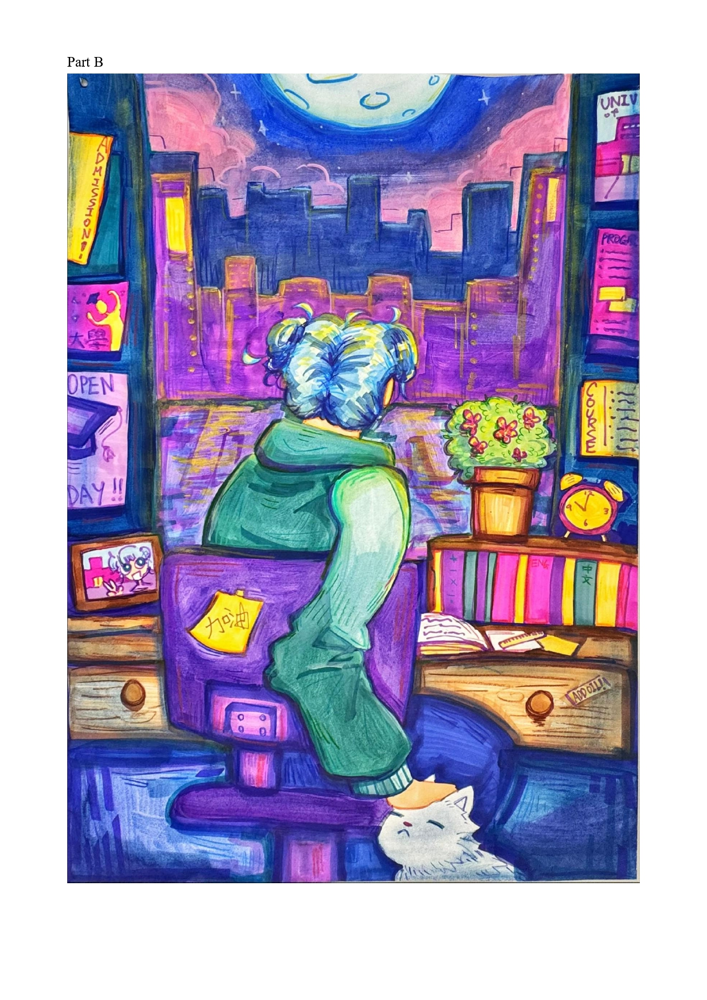
Creative briefs (page 6)
Looking up at the sky from a brightly lit city.
The girl looks up at the sky from her apartment in a bright vibrant city, taking a break from her studies to gaze upon the moon. The lights of the buildings illuminate her room.
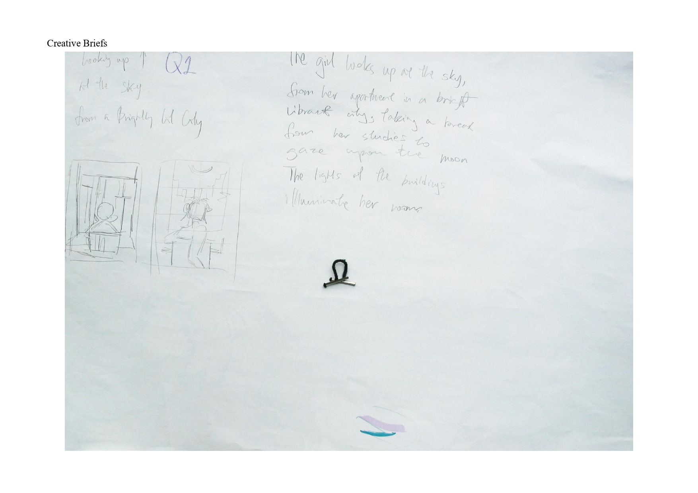
Level 5 exemplar (2) — Paper ONE · Question 5 · Part A
2025 exam plates
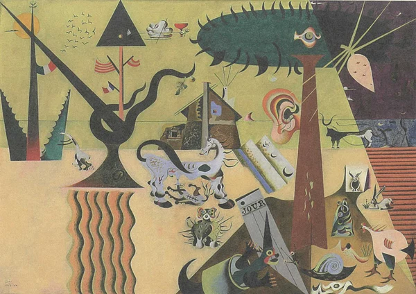
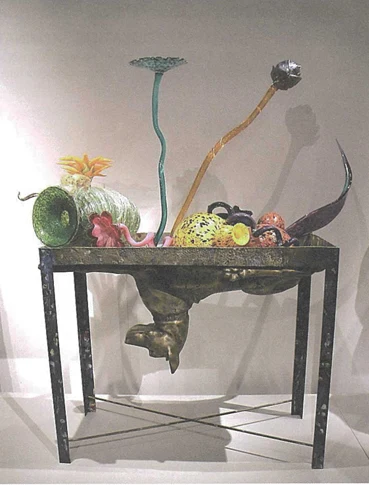
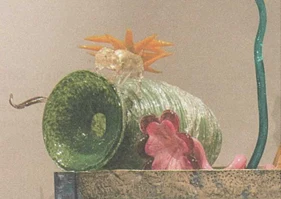
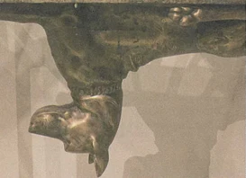
Describe
5A) The two plates are both interpretations of animals, with modified shapes and vibrant colours. However they are drastically different in terms of dimensions of the work, and the message to be delivered.
Plate 5A is a two-dimensional oil on canvas, horizontal, depicting the living of animals in geometric shapes in a countryside. The background of the painting is divided into four colour areas but unevenly: pale light green, pale yellow (rather in a warm tone) in major, and dark purple and red with black horizontal line patterns. About the foreground, there is no major subject; animals and plants are evenly distributed in this work, colourfully. A tree whose body is in long geometric shape with circle flatly as its top, representing its leaves. There is an eye intricately drawn with rainbows of colour. Animals like the horse in the middle, the chicken at the right corner, the snail, the rabbit at the sides are all depicted in geometric shapes, which is unrealistic. There is an ear on the tree's body as well. The river painted in orange, yellow and black is simplified into wavy curves. The trees at the back are holding a national flag. All elements are surrealistically drawn, with some of them added with human body parts. There is shading inside each animal and plant with complementary colours but not between the division of each object. The painting hardly shows depth or real-world distance but flatly represents each animal in multiple perspectives.
Plate 5B is a three-dimensional installation of a modified table with colourful elements of transparent glassy sculpture added on the face of the table (showing its coldness). The table is dominated with gold (light reflected), black, bronze, cold, metallic. There is a dog-shaped half body under the table which is detailedly sculptured; its skin and face is clearly shown. The vibrant colours of the glassy objects on the table contrast with the dull, monochromatic colour of the dog under the table.
Interpret
Both plates are showing the modification of nature: plate 5A combines plants and human parts, while plate 5B combines animals and objects. Plate 5A seems to imply a world in general of what if plants become human and live like humans. The ears on the tree suggest a clear sense of unrealism and show the artist is trying to humanise the plants. The tree seems interacting with the animals, showing a fantasy of animal in nature that viewers cannot feel in real life. This shows that the artist seems trying to tell the viewers about imagery of trees and animals connection. In depth, this may also imply our lack of connection or empathy towards nature and animals in nowadays society.
Plate 5B seems to blend a table with dog, suggesting that the dog's body or legs are the legs of the table. Many objects in abstract shapes are put on the table. This may suggest the labour work of the dog or simply the function of the table. However, combining them together shows the artist is trying to convey a message of the mistreatment of animals and disrespect of humans to them, whereas some people may treat their pets as labour, to order them to work instead of giving them love and care. Therefore, both plates seem trying to remind people the proper way to treat animals through different media and representation.
Analyze · compare
In terms of colour use, both plates use vibrant colours in overall works. However, I believe plate 5B has better delivery of its message of taking care of pets or to remind people to identify the proper way to treat pets, with the construct of thousands of objects on the table, colourfully, and the monochromatic bronze dog under the table. The colourful element seems to symbolise the burden of dog when being mistreated but in our eyes those are colourful, which shows our misunderstanding and lack of empathy toward the pets.
In terms of object arrangement overall, I believe plate 5A does better to convey its message of the connection of animals and nature. As the addition of ear on tree's body parts and holding flags and the joyful colours in overall palette which is rather warm, showing the harmony of them together in a big picture, while plate 5B is rather focusing on one animal and one object interpretation. Hence, plate 5A seems to deliver its message more all-rounded as showing the atmosphere through a two-dimensional medium and the general picture of the artist's fantasy world with such approaches, allowing viewers to deeply think about the relationship between animals/plants and reflecting on the destruction humans had done to the world.
Judge
Both plates are craftily made and successfully developed their own message in terms of different realms.
Level 5 exemplar (3) — Paper ONE · Question 2 · Part A
2025 exam plates
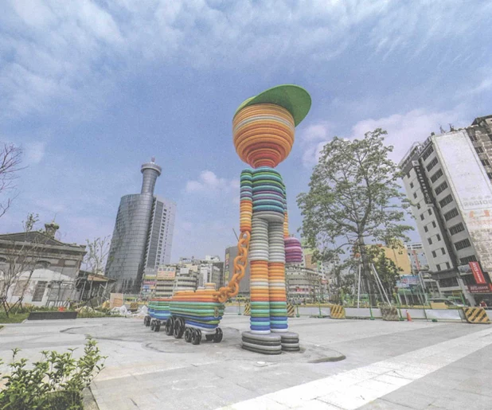
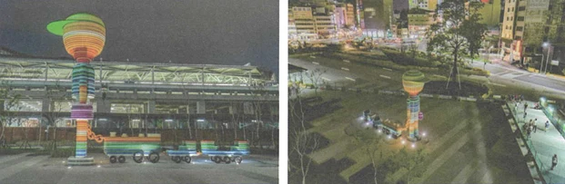
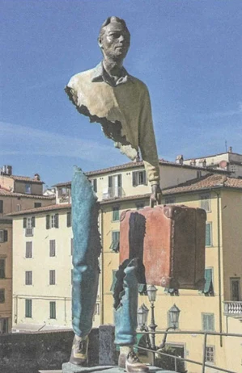
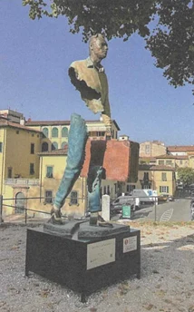
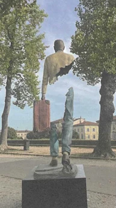
Describe
Both plate 2a and 2b are installations featuring a humanoid with an item in their hand and displayed in public.
For plate 2a, it is named Anticipation, made in stainless steel circular bend pipes, wood, plastic composites, sandblast ground and LED light, size 273 × 1148 × 850 cm, by Inges Idee in 2018.
Plate 2a features a cartoonised humanoid child; the body part and face are not clearly visible. The ratio of its anatomy is unrealistic since its head is round and big and its arms and legs are shaped cylinder, making it a cartoonised feature. With addition the use of bright warm colour such as yellow, orange, light green, or sky blue and purple, gave a lively, playful mood. It is believed that the installation is featuring a child as the humanoid is dressed in green cap, short shirt and holding a toy car — those features usually representing child, giving effect of childish. And as it was standing straight in a public place, seems the kid was lost and don't know where to go.
For plate 2b, it is named The Travellers J4, made in bronze, size 310 × 120 × 110 cm, by Bruno Catalano in 2022. As similarity, it also features a standing humanoid as plate 2a. However, the style of this humanoid is realistic as the facial features, body parts and even folds of his clothes are similar as a real person. The most expressive feature in this artwork is the humanoid had his torso empty, making the installation unstable like it was erased suddenly. The floating features also gave an idea of emptiness as the erased part gave chance for audience to take a look at his body interior. No organs shown, showing his numbness as same as his facial expression. The artwork is named The Travellers J4; however, the man does not seem like he is enjoying the travel but looks like a zombie walking aimlessly, issuing the common mental state of modern people as people nowadays are numb and have loss of faith.
Analyze
For artwork media, plate 2a made use of stainless steel circular bend pipes and plastic composites, which are unusual as most statues are usually made in bronze as plate 2b traditionally to avoid physical damage such as acid rain. However, it is also creative and successful as the plastic composites gave bright colour which bronze can't achieve. Use of bright colours and LED lights help the installation stand out from the environment's dull colours and visible during light time, successfully to express child is difference from city space occupied by adults. Child's views are usually more optimistic than adults but unfortunately they might easily get lost in adult's world once they grow up, making a great contrast compared to plate 2b as plate 2b is exactly the adult with no joy. The traditional use of bronze of production also gave the installation a monotone of brown which the colour is less saturated, gave effect of negative mood. And the installation have a similar colortone as the environment — for example, the light yellow tone of his needle shirt is as same as those housed behind him, gave a message that actually this man is already part of an environment. He might experienced limitations from social, was expected to act like what people think an adult should be. Lastly, he turned into a numb person with his heart empty, could only escape from reality by travelling.
Interpret · judge
Despite the great contrast of both plates presented visually, I think both plates have an extra similarity of theme expressed. For plate 2a, it is expressing a child who didn't fit the adult's environment, getting lost but never lost his childish. And for plate 2b, expressing a man travelling — although he knew his way of travelling, actually he is losing his mind once he turned into an adult. Both artworks express the theme of 'lost' but in different perspective as 2a is child while 2b is an adult. Both plates gave a remarkable expression to tell message to audience but personally I think plate 2a is more creative as the art style is more unique and also aware people to take care of their children not to get lost in public space, while plate 2b, the expression of showing emptiness by erasing part of the artwork is actually quite common in art-making but also expressive.
Level 5 exemplar (3) — Part B
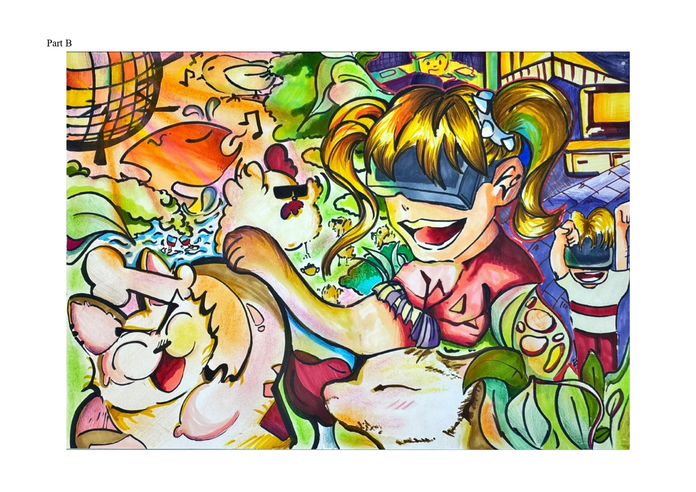
Creative brief: An animal party in the virtual world.
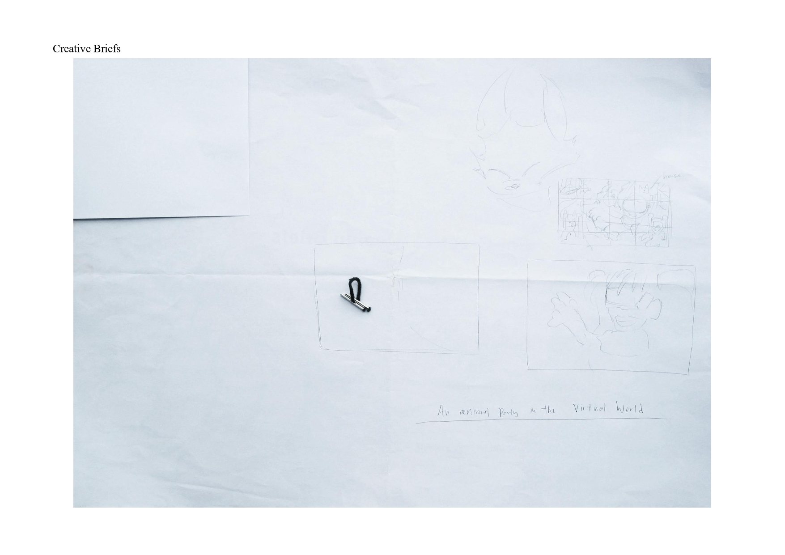
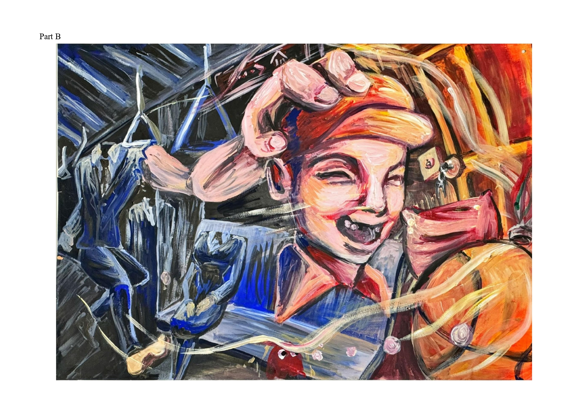
Creative brief (page 21)
Man → child. Head and body → physical and spiritual. Playful → basketball. Home → home door, door ring, key ring. Officer → running home. Broken shirt and shoe is missing. Run straight to train → dark tone, depressive (going home).
Statement: This drawing features an officer running home via train. Although his body is an adult, his mind is still a child. The only happiness he could gain is back home to enjoy playtime, so he can't wait to send his head back to home. The fantasy is that most officers are out of head because their mind is empty too.
Level 5 exemplar (4) — Paper TWO Design · Question 1 · Part A
2025 exam plates
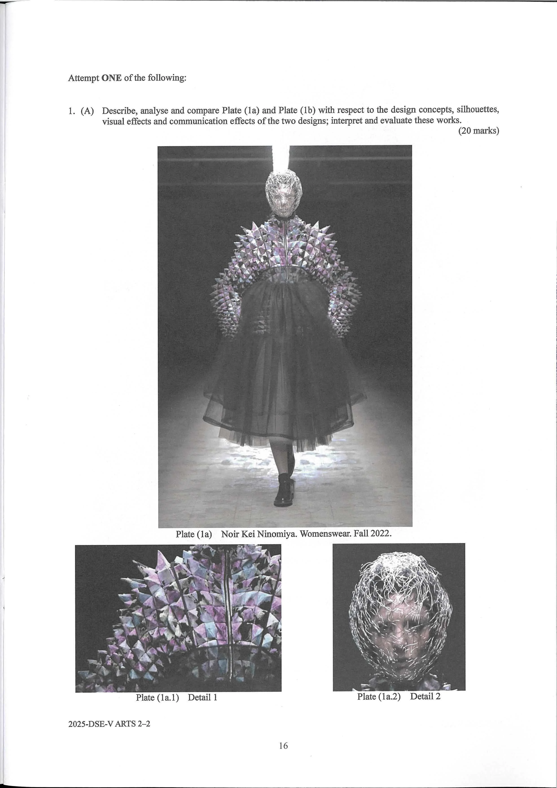
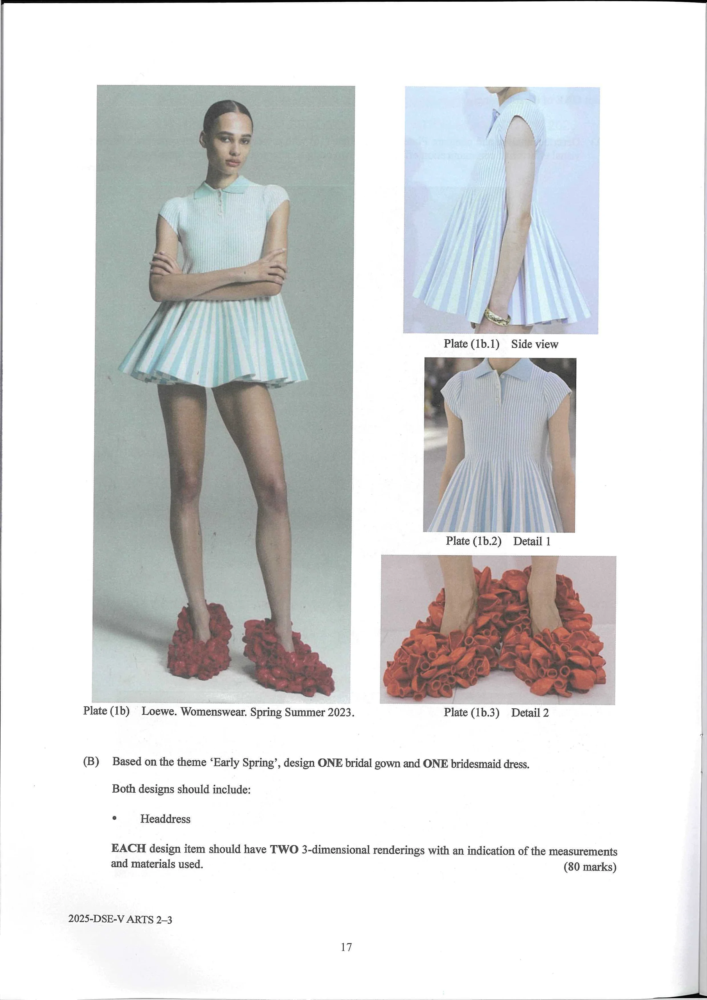
Describe
Plate 1a is a womenswear look from Noir Kei Ninomiya Fall 2022 collection, while plate 1b is a womenswear look from Loewe Spring Summer 2023 collection.
In terms of visual effect, plate 1a has a more huge visual effect. In plate 1a, the upper body is formed by a white mask. The pattern of the mask is like irregular grids so the mask looks like a bird net. Besides, there is a short jacket which has a zip in the middle. There are some 3D spikes on the jacket which sizes vary. The spikes are shown in purple, grey, silver and sky blue colour and in a metallic effect. At the lower body, there is a yarn dress with many layers. The dress is shown in black colour. As the material used is semi-transparent, the white inner layer of the dress is visible and also the lower part of the jacket can be seen. There is also a pair of black leather boots.
In plate 1b, there is a minidress; the silhouette is tighter than plate 1a — plate 1b has an X-line silhouette. At the collar, there are three buttons and also a blue collar. At the upper part of the dress, there are blue-and-white stripes which are vertical. The stripes are thin and long and are closely packed. There are also cap-shape sleeves which are short. At the 'skirt' part of the dress, there are also stripes which are in sky blue-and-white colours; however, the stripes are thicker and less dense. Also, the dress is folded so there are drapings at the bottom of the dress. At the lower body, there is a pair of shoes presented like a bunch of loose balloons packed together. The size of the shoes is exaggeration. In terms of background, both plates 1a and 1b are shown in a plain colour background — plate 1a is black and plate 1b is sky blue.
Analyze
In terms of visual design principle, balance is shown in both plates. As all elements in the plates are placed and arranged equally side by side, the plates look symmetrically balanced and it gives a pleasing feel to the viewers. In addition, both plates show contrast. Plate 1a uses different materials in the upper and lower body. The jacket is more solid due to its metallic appearances while the lower body has a floaty and lighter feeling due to its light material. Therefore, a strong contrast is shown in terms of texture. In plate 1b, the different size of pattern between the upper and the lower part of the dress creates different visual effect which makes the dress more fun. The tighter silhouette at the upper part of the dress and the loose silhouette on the lower part of the dress also creates contrast.
Also, plates 1a and 1b create a sense of rhythm. The spikes in plate 1a appear as repeated mass and the variety in their sizes generates movement like the spikes are popping out. In plate 1b, the stripes' size extend from high to low, created a waterfall-like pattern, seems like the stripe is moving from high to low, guiding the viewer's eyes from looking at the upper part of the dress to the lower part of the dress. Moreover, plate 1a has the focal point in the jacket because the pattern on it is unusual from the ordinary jacket. Plate 1b has the focal point in the shoes because the exaggeration of their size is shown. Furthermore, plate 1b generates unity because the patterns are the same in the dress which makes it look unified.
Interpret
In terms of design concept and message, plates 1a and 1b portray different kinds of people and deliver different beliefs. In plate 1a, Noir Kei Ninomiya inherited the rebellious and revolutionary spirit from Rei Kawakubo and created a look that is not traditional. The sense of femininity is not emphasized in this look because the spikes on the jacket look aggressive. The silhouette is also in a bell shape which the body of the female model is not emphasized. It symbolizes the liberation of women's body and the white mask blurs the face of the model, delivering a message that women do not need to show their beauty just relying on their faces. The look can be read as women empowerment.
In plate 1b, the designer Jonathan Anderson aligns with his playful design concepts which the shoes are shown in a balloon shape. The dress is also in a very small size. It reminds the viewers about their childhood, like the model is wearing her childhood clothing again, and is willing to try on everything as a child, including balloons. The look replicate the fun and exploration people have in their childhood.
Besides, the creation of the shoes also aligns with the spirit of the old Spanish House of Loewe, which is the emphasis of exceptional leather craftsmanship. The idea of both plate 1a and 1b is innovative and the message sent is meaningful — plate 1a lets people rethink about women status in society and plate 1b provokes people's memories of childhood and the fun to wear beautiful clothing.
Judge
In comparison, I like plate 1b more. Both plates 1a and 1b have high level of craftsmanship; the spikes in plate 1a and the balloon shoes in plate 1b show excellent savoir-faire. Besides, both designers deliver their message clearly because the elements emphasising that are obvious and deliberate. Plate 1b is a plate I can resonate with because it reminds me of my childhood, the desire to dress myself beautifully. The communication skill of the plate is good. Both plates also use different design principles and include the brand DNA to emphasize the identity of the brand and enrich the looks. The plates also have deep meaning.
Level 5 exemplar (4) — Part B
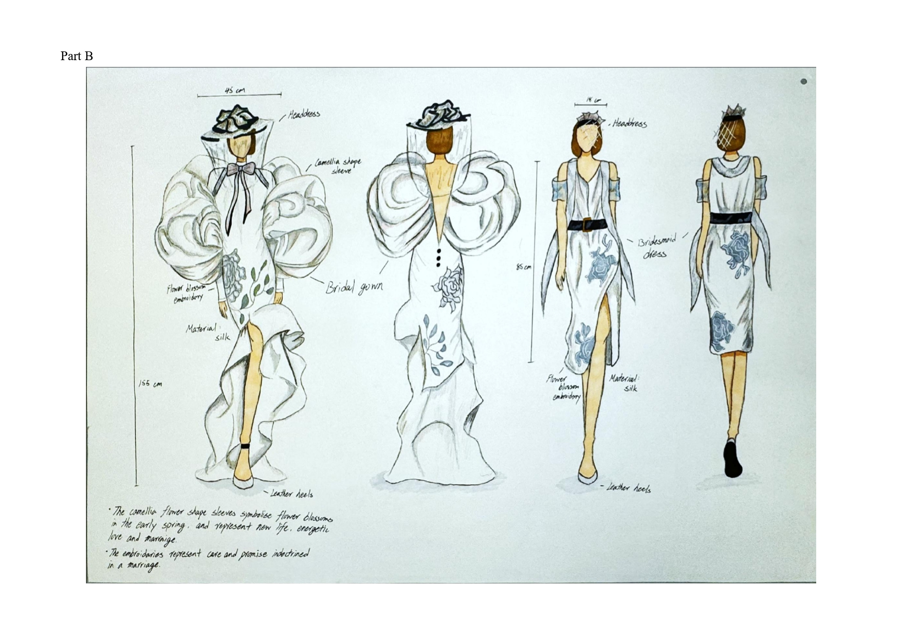
Bridal gown: camellia-shaped sleeves; flower blossom embroidery; material silk; leather heels. Headdress width 45 cm; height 155 cm. Deep V-back with three buttons.
Bridesmaid dress: knee length; black belt; same embroidery motif; headdress width 18 cm; dress length 85 cm.
The camellia flower shape sleeves symbolise flower blossoms in early spring, and represent new life, energetic love and marriage. The embroideries represent care and promise indoctrinated in a marriage.
Page 28: printed note — “No Design Briefs for this Exemplar”.
Level 5 exemplar (5) — Paper TWO Design · Question 3 · Part A
2025 exam plates
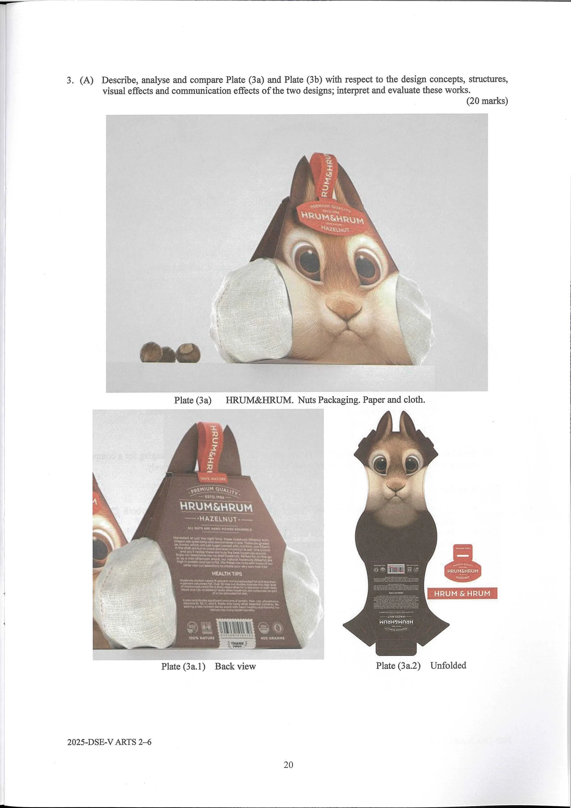
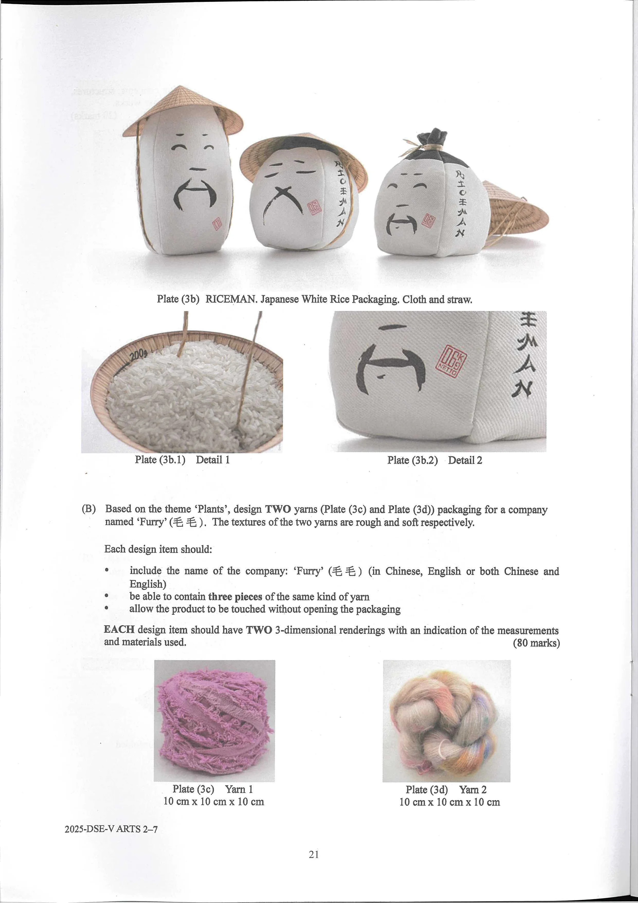
Describe
Both plate 3a and 3b are package design for food. In plate 3a it is a "nuts" design with a shape of squirrel. The package of the product hazelnut is in white package which create a chubby face for the squirrel. While in plate 3b, there are some riceman wearing hats — it is Japanese traditional farmman. The colour of these farm man are white, and they are in different body shapes ranging from tall, short, fat and slim. The typography of plate 3a is sans serif which is a modern typography but plate 3b is in Japanese, which is traditional typography.
The colour in plate 3a is warm and saturated which create vitality and enthusiasm and grab audience's attention. While in plate 3b, the colour is dull and low-key, simply white and brown which feels like relax and soft, affinity and comfortable.
Analyze
In plate 3a it used symmetrical balance; it creates a sense of stability and visual consistency and enhance readability. The face of the squirrel is symmetrical balance. In plate 3b it used blank space which give people unlimited imagination which is more interesting than a full design and interact with viewer instead of making viewers passively accept information. Plate 3b also used symmetrical balance as the face of white riceman are symmetrical balance. In plate 3b, it used emphasis as it highlight the key point which create certain elements like 'rice' stands out in the design and guide audiences' attention. In plate 3a it also used emphasis as the facial features of the squirrel stands out and enhance visual appeal and make it easier to notice the element which the package of the nuts.
Interpret
Regarding the functions, in plate 3a it encourage customers to purchase the product, while in plate 3b it also invite audience to purchase the product as they are product designs.
Regarding symbolic meanings, in plate 3a the squirrel represent their habit to eat nuts therefore audience might resonate with the product and evoke their passion to eat nuts, while in plate 3b, three riceman represent rice and audience can directly think about rice as it obviously show the key feature of rice.
Regarding audience, in plate 3a, audience are mainly youngsters and children as the design is cute and adorable associated with happiness and joy. In plate 3b, audience are mainly housewife or adults as it is daily necessity. Most likely only housewife or domestic helper will buy these product so the colour of the design will be more dull and blank which create a sense of reassurance and credibility for consumers.
Judge
I prefer plate 3a, as the design is more user friendly, and audience can easier understand how to use the product. I think plate 3a is a successful design as I can resonate more about the elements like squirrel and nuts; they are relevant and make sense. And the design is convenience for audience to touch the product and feel the shape and texture of nuts.
However, in plate 3b, it is hard to realize how to use the product as the picture didn't show how to open the product. And the package of rice man is used cotton canvas which is soft material easily to be wet or dirty or even the rice will falling out if the user didn't seal the package carefully. I think the designer should change the package into another materials like acrylic plastic or other material which is more stable to hold the rice.
Level 5 exemplar (5) — Part B
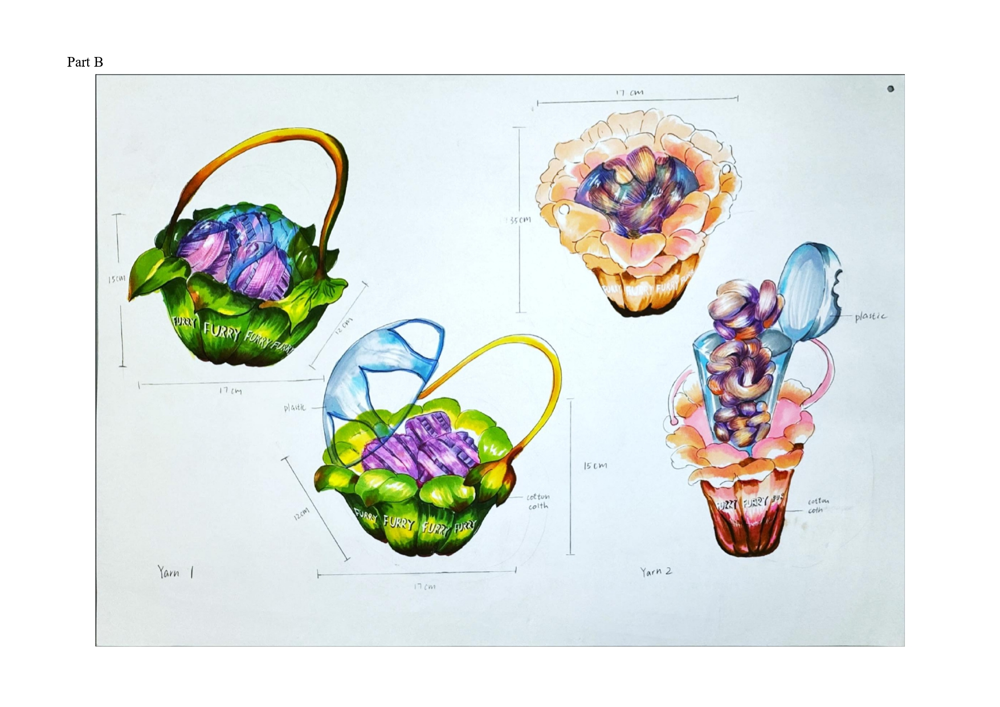
Leaf-shaped baskets with purple egg-shaped contents; bases labelled FURRY. Dimensions noted: heights 12–15 cm, widths 17 cm. Materials: plastic lid, cotton cloth base. Flower-shaped lid variant (Yarn 1 / Yarn 2).
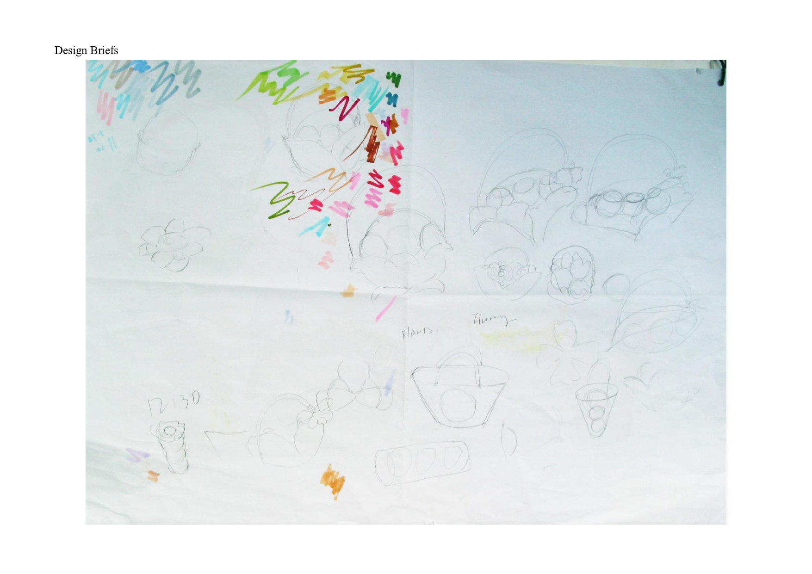
Sketch notes: plants; colour swatches; form explorations for basket / yarn packaging.